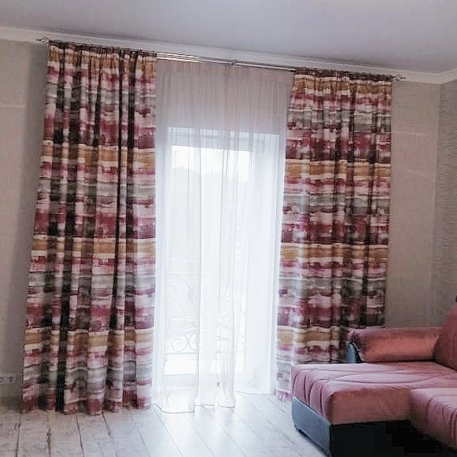
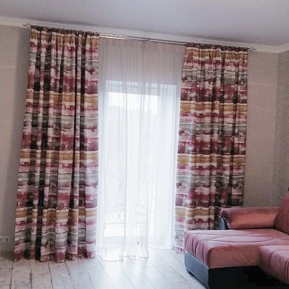

Салон Штор «ДЕВАРВИ» оказывает следующие виды услуг:
- - текстильный дизайн интерьеров
- - подбор и расчет необходимых материалов
- - изготовление карнизов
- - изготовление жалюзи
- - пошив штор, покрывал, чехлов на мебель, постельного белья
- - ремонт и переделка уже существующих текстильных изделий
- - качественный пошив
- - доставку, установку и навеску изготовленных карнизов, жалюзи, штор
- - и ещё очень много всего
Наш Салон Штор работает уже более 15 лет. Колоссальный опыт в текстильном дизайне позволяет находить правильные решения для любых интерьеров. Обычно работа начинается с постановки задачи. Далее дизайнер подбирает необходимые ткани, карнизы и т.д. прорисовывает эскиз от руки.

 

Наша фирма напрямую сотрудничает с огромным числом фабрик по производству тканей. Поэтому цены у нас очень вменяемые.